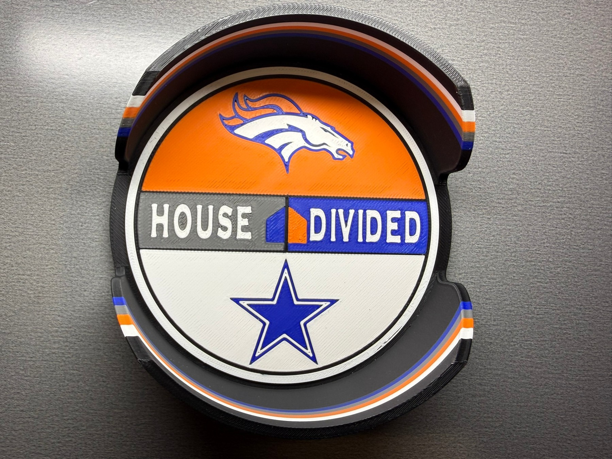

HOUSE DIVIDED
Two teams.
One house.
Choose the sport, pick both sides, and build the combination that lives at your place. If one of your teams is not in the standard list, either side can become a custom team.
Build yours
STANDARD + CUSTOM
Your teams. Your combination.
Choose from the supported team library, or make either side a custom team for a school, club, local organization, or other design. WestTech keeps the House Divided layout and printable color treatment consistent.
Standard teamsPre-built team artwork and approved print colors.
Custom sideAvailable on either side with artwork review.